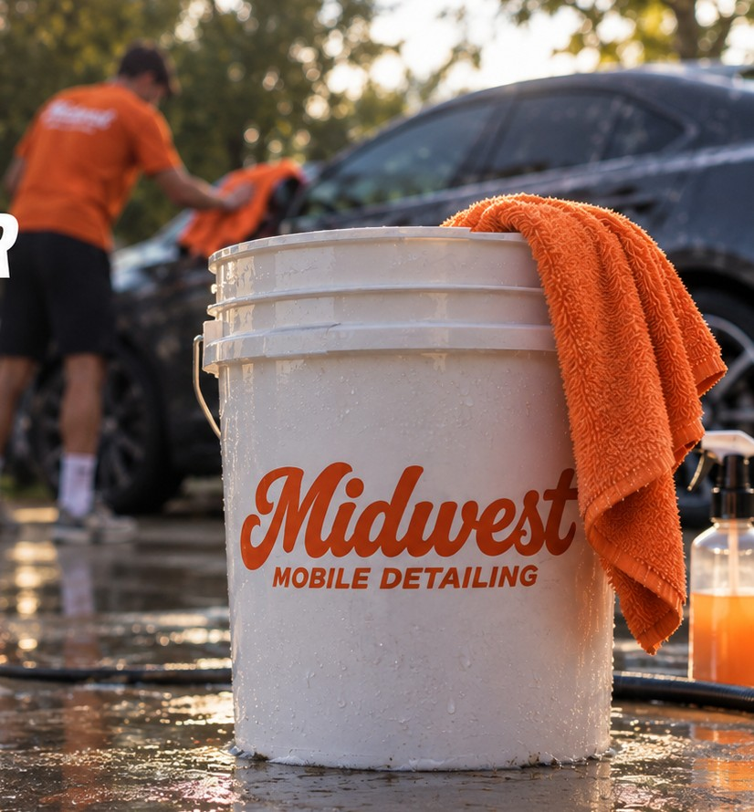

Midwest Mobile Detailing serves Johnson County, Kansas, including Olathe, Overland Park and Leawood. Explore mobile detailing packages and location requirements.
Mobile detailing in Olathe
Book a detail at your Olathe home and have your cabin, exterior or both cleaned at the service address. Choose the Cabin Refresh for interior dirt, the Fresh Finish for an exterior hand wash and protection, or the Full Reset for a combined visit. Share your address and vehicle details when requesting an appointment.
Mobile detailing in Overland Park
For an Overland Park appointment, check that the parking spot has room to work around the car and access to an outdoor water hookup and standard electrical outlet. If you live in an apartment or use a shared parking area, confirm that washing is allowed before booking. Contact us if the location requirements are uncertain.
Mobile detailing in Leawood
Leawood customers can choose the same interior, exterior and complete packages. If the vehicle has heavy pet hair, stains or unusual contamination, text photos before the visit so we can discuss the work and estimate. We bring equipment and products; water and power are supplied at your location.
Elsewhere in Johnson County?
Send your service address to confirm the location and arrangements. We are a mobile business, so your appointment takes place at the agreed service address rather than a storefront on this page. Starting prices are $159 for interior, $89 for exterior and $229 for complete detailing. Vehicle size, condition and extras affect your quote. Check the live booking calendar for availability, and pay after the detail.
Questions about this service
Do you need water and power at every location?
Yes. An outdoor water hookup and standard electrical outlet are required. Contact us before booking if your location cannot provide them.
Ready for a cleaner car?
Check the live calendar or text your vehicle details and photos for a quote. Serving Johnson County, Kansas. Water and power access required.